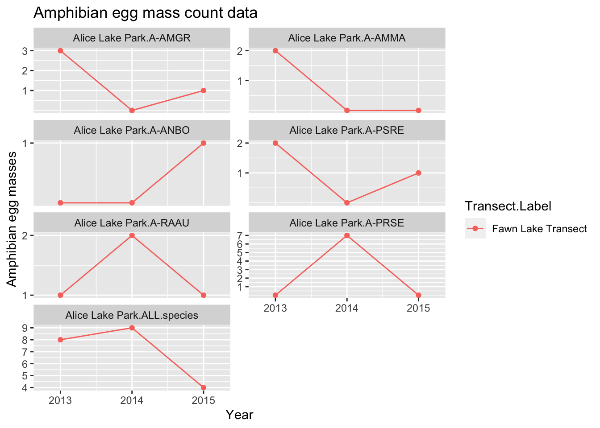
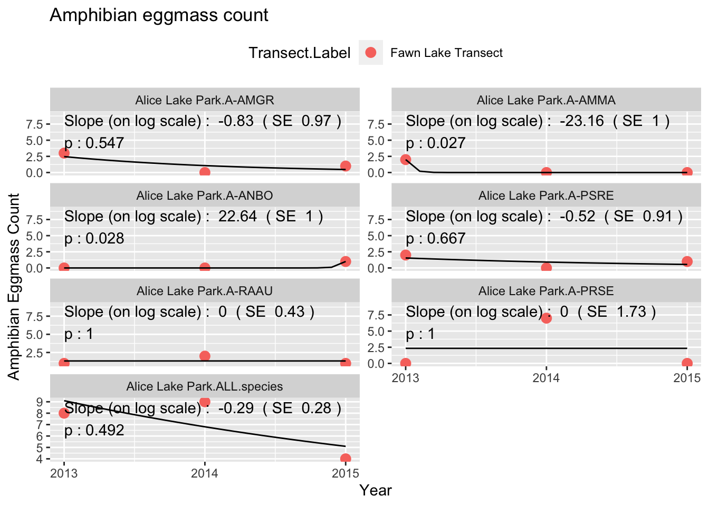
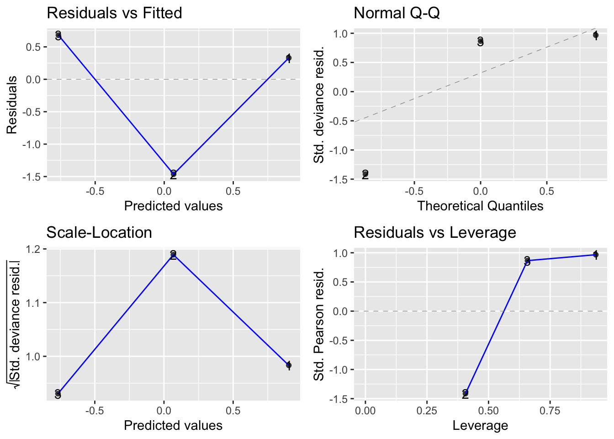
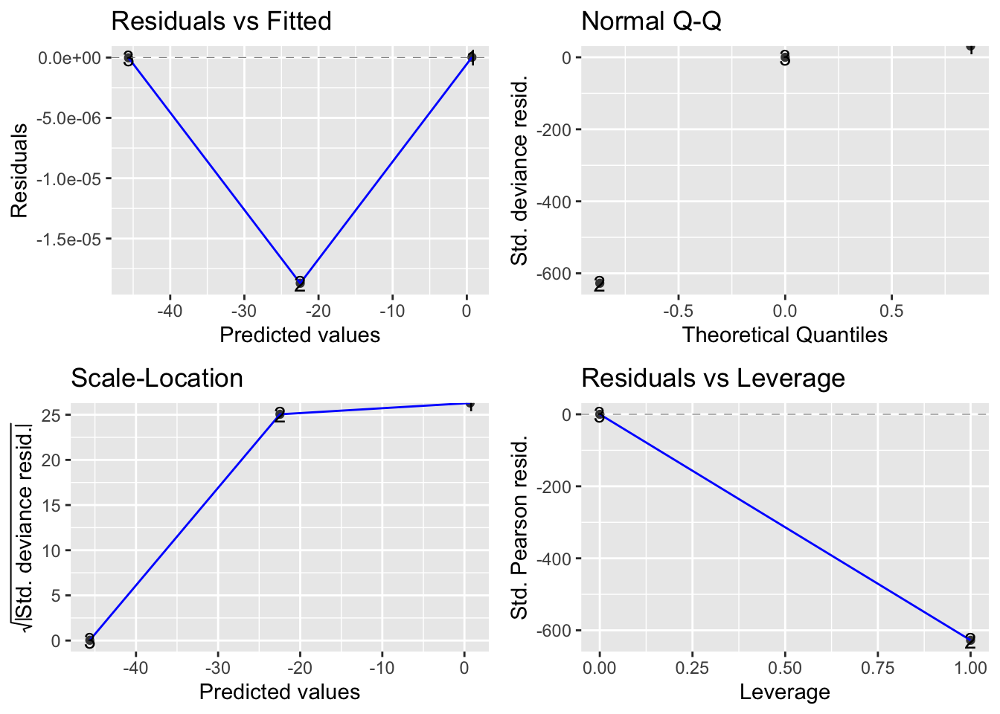
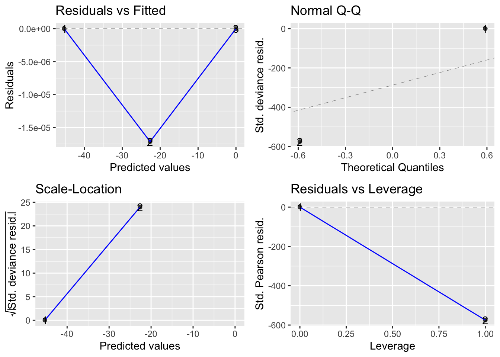
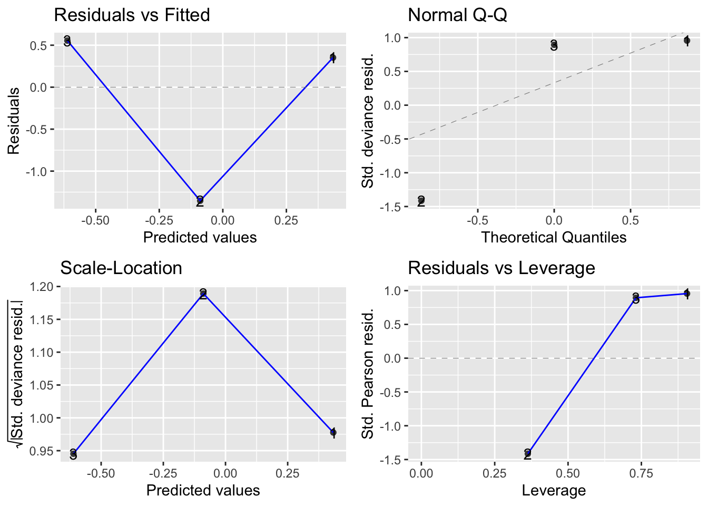
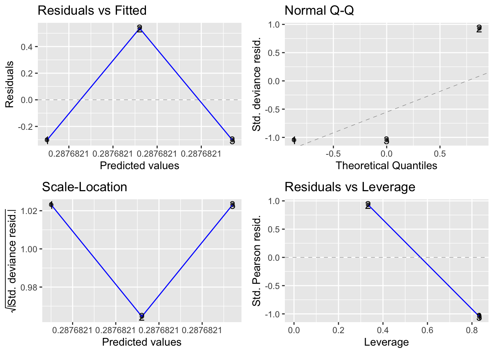
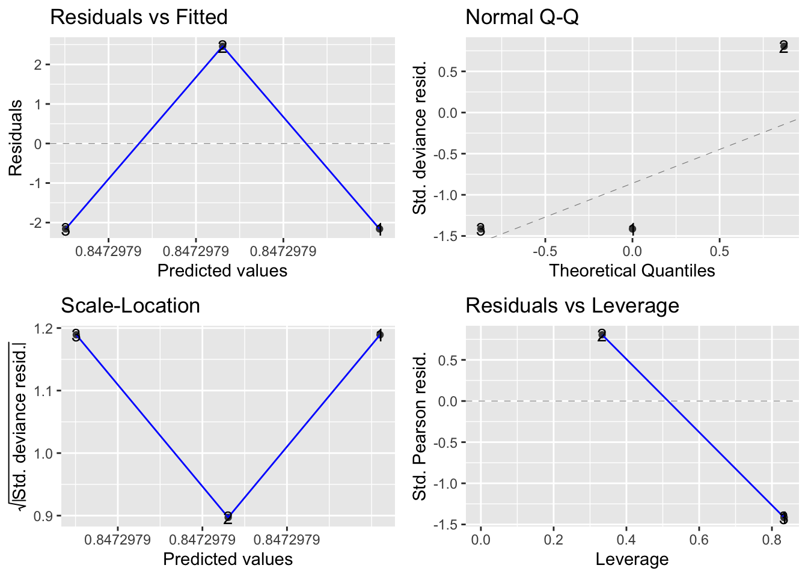

Amphibians - LTEM - Alice Lake
1 Summary of Amphibian LTEM protocol
1.1 Basic protocol
There are two protocols – calls and visual surveys.
As taken from the protocol document for call surveys:
“Define a survey transect along or through your wetland. … Surveyors visit the monitoring site(s) in spring and listen for calling males, recording the species and approximate number of each. Repeat surveys increase the probability that species will be detected.”
As taken form the protocol document for visual surveys:
“Surveyors monitor breeding site(s) during the active season (spring to fall), walking the shoreline of a wetland recording all species and life stages encountered. These include egg masses, tadpoles and adults. Repeat surveys increase the probability that species will be detected.”
The data collected under this protocol at each survey consists of:
- Species. The species of amphibian counted.
- Life Stage. The life stage of the species.
- Count. The number of amphibians at this lifestage.
1.2 Cautions about the protocol.
1.2.1 Don’t use 0 to indicate a missing value.
If no species were seen during a visit, this is indicated by the lack of a record for that visit. It will be necessary to assume that all species will have been searched for at each visit and that lack of count for a species implies it was searched for and not seen, rather than the observed did not know how to identify the species.
It is unclear how NO amphibians of species will be recorded in the database?
If no visit was made to a transect, then there are no records in the General Survey for that transect. One must infer that if there are no records for transect at a date that it was not visited. The Transect Information worksheet only has information on the transect label and not when they were visited. It is preferable to include in this sheet the visit dates of each transect in that year explicitly rather than trying to infer this information from the General Survey sheet.
This may have been corrected in the new datasets
1.3 Database structure
The database for this protocol is a series of Excel workbooks with multiple sheets in each workbook. The Transect Information sheet contains the information on the transect available for this year. If a transect is not visited, this is indicated by a no records in the General Survey workseeht. The General Survey sheet contains the information collected. There are multiple lines per visit. If a visit was done but no amphibians were detected, then the species code is set to missing with a count of 0.
The relevant fields on the General Survey worksheet are:
- Transect Label.
- SurveyType. Was this an visual or calling survey?
- Date. The date the data was collected. The Year is extracted from this date.
- Species. What species were seen
- LifeStage. What life stage was counted
- Count. Count of the number of amphibians of each species.
2 Reading and checking the data
The database was read for all record pertaining to the Alice Lake. The following files were found:
File names with the data file.name
1 General Survey Using Transects-amphibians_AliceLake2013.xls
2 General Survey Using Transects-amphibians_AliceLake2014.xls
3 General Survey Using Transects-amphibians_AliceLake2015.xlsThese workbooks were read using R:
The following data editing was performed
2.1 Variables names corrected for R
Variable names in R must start with a letter and contain letters or numbers or underscores. Blanks in variable names are not normally allowed, nor are special characters such as %. These are normally replaced by periods (“.”) in the variable name.
Original variable names in data frame [1] "file.name"
[2] "Study Area Name"
[3] "Transect Label"
[4] "Date"
[5] "Time"
[6] "End Time"
[7] "Surveyor"
[8] "Species"
[9] "Count"
[10] "UTM Zone"
[11] "Easting"
[12] "Northing"
[13] "Survey Type"
[14] "Life Stage"
[15] "Background Noise (for auditory surveys)"
[16] "Calling Noise (for auditory surveys)"
[17] "Preceeding 24 hour precipitation"
[18] "Air temp (c)"
[19] "Cloud cover"
[20] "Wind speed"
[21] "Snow coverage on ground"
[22] "Current precipitation"
[23] "BEC"
[24] "Comments"
[25] "Preceeding 24 hour precipitation (mm)"
Corrected variable names of data frame [1] "file.name"
[2] "Study.Area.Name"
[3] "Transect.Label"
[4] "Date"
[5] "Time"
[6] "End.Time"
[7] "Surveyor"
[8] "Species"
[9] "Count"
[10] "UTM.Zone"
[11] "Easting"
[12] "Northing"
[13] "Survey.Type"
[14] "Life.Stage"
[15] "Background.Noise..for.auditory.surveys."
[16] "Calling.Noise..for.auditory.surveys."
[17] "Preceeding.24.hour.precipitation"
[18] "Air.temp..c."
[19] "Cloud.cover"
[20] "Wind.speed"
[21] "Snow.coverage.on.ground"
[22] "Current.precipitation"
[23] "BEC"
[24] "Comments"
[25] "Preceeding.24.hour.precipitation..mm." 2.2 Dates converted to standardized form
The number of records by year are Year
Study.Area.Name 2013 2014 2015
Alice Lake Park 17 12 92.3 Checking Study Area Name
The Study Area Name should be recorded consistently across years, otherwise it may indicate that different sites are being studies. The study area name is converted to Title Case.
The list of Study Area Names by year in the data is:
Year
Study.Area.Name 2013 2014 2015
Alice Lake Park 17 12 9You should also check the transect labels for typos, e.g., inconsistencies across years. This is difficult to automate and needs a human touch.
Transect.Label
Study.Area.Name Fawn Lake Station Fawn Lake Transect
Alice Lake Park 3 35 Year
Transect.Label 2013 2014 2015
Fawn Lake Station 2 1 0
Fawn Lake Transect 15 11 92.4 Checking species code
The species code should be the same across the files.
Species
A-AMGR A-AMMA A-ANBO A-PRSE A-PSRE A-RAAU
5 2 6 8 9 5
AMPHIBION Unidentifed
2 1 Year
Species 2013 2014 2015
A-AMGR 4 0 1
A-AMMA 2 0 0
A-ANBO 1 1 4
A-PRSE 0 8 0
A-PSRE 6 1 2
A-RAAU 2 2 1
AMPHIBION 2 0 0
Unidentifed 0 0 1*** WARNING *** More than one species name found
The number of records by species and year are Year
Species 2013 2014 2015
A-AMGR 4 0 1
A-AMMA 2 0 0
A-ANBO 1 1 4
A-PRSE 0 8 0
A-PSRE 6 1 2
A-RAAU 2 2 1
AMPHIBION 2 0 0
Unidentifed 0 0 12.5 Check the survey type field
The survey types should be one of AU (audio) or VI (visual)
Survey.Type
Year AU VI
2013 2 15
2014 1 11
2015 0 92.6 Check the Check the Life Stage Code
The survey types should be one of AU (audio) or VI (visual)
Life.Stage
Year AD EG LA
2013 3 8 6
2014 3 9 0
2015 4 4 12.7 Check the comments
The comments recorded should be reviewed in case these indicate problems with the data,
Year Comments.short
1 2013 background noise was songbirds
3 2013 best guess on species; gelatin
4 2013 best guess on species; smaller
5 2013 best guess on species
6 2013 best guess on species
7 2013 Dead; Best guess - possibly la
8 2013 Dead; best guess, possibly AMM
9 2013 spent (hatched)
10 2013 Best guess on species
11 2013 unidentified frog
12 2013 Some egg masses look old and a
15 2013 Best guess on species; eggs ar
16 2013 Egg masses spent (hatched) and
20 2014 egg mass
21 2014 egg mass
22 2014 egg mass
23 2014 egg mass
24 2014 egg mass
25 2014 egg mass
26 2014 dead - large, older individual
27 2014 egg mass
28 2014 egg mass
29 2014 egg mass
30 2015 note that the end point of tra
35 2015 three areas with lots of eggs3 Single Site Analysis
Date for the Alice Lake are available from 2013 to 2015.
This design could have multiple transects that are repeatedly measured over time with multiple plots measured on each transect that are also repeatedly measured over time. Please refer to the Fitting Trends with Complex Study Designs document in the CommonFile directory for information on fitting trends with complex study designs. For the Alice Lake Example, there is only one transect which simplifies the analysis considerably.
All analyses were done using the R (R Core Team, 2022) analysis system. The R code is general enough that if more than one transect is present, it will automatically choose the more complex linear mixed models as seen in the other protocols. All plots are also saved as separate *png files for inclusion into other reports.
3.1 Calling Data
According to the protocol, the approximate number of calls heard during the visit should be recorded. This is not available in the data base, only presence data is recorded. Given that only 1 station was visited in Alice Lake with 2 visits in 2013 and 1 visit in 2014, no analysis on presence/absence is possible at this time. A logistic regression analysis may be possible if multiple stations are visited in each year and presence/absence of sounds is recorded.
The usual protocol for aural surveys is an occupancy study to deal with the problem of false negatives (Mackenzie et al 2005). In this protocol, multiple stations are visited multiple times and the pattern of detection at each station is used to infer the probability of detection and hence to adjust for false negatives.
3.2 Visual Data - Number of Egg Masses
This analysis will look at trend in the total number of detected egg masses (for each species, and over all species). The current data is extremely sparse at the species level and likely to be uninformative.
A key problem with this protocol is the emphasis in the previous paragraph on detected. It is not possible to count all of the egg masses laid in the study area; it is also unlikely that all egg masses along the (fixed) transects will be detected in each year. Consequently, it is necessary to make the VERY STRONG assumption that detectability is constant over time for each transect. This may be violated, for example, when different numbers of visits are made across years on the same transect (e.g. two visits were made in 2013, while only one visit was made in 2014 and 2015). Presumably, if more visits are made to a transect, then more egg masses may be detected.
We also need to make the strong assumption that egg masses are not double counted across multiple visits to the same transect. There is no information stored on the database on the exact location where an egg mass was located so it is difficult to verify this information.
Even if the above assumptions are satisfied, the number of observed egg masses is only an INDEX to the population number of egg masses.
The data is first summarized to the year level for each transect counting the number of records that identify an egg mass. This reduces the data to one measurement per transect per site/year.
We first need to impute 0 values for a species if not listed as being detected in a year.
The number of egg masses counted by species Study.Area.Name Transect.Label Year Species n.eggmass
1 Alice Lake Park Fawn Lake Transect 2013 A-AMGR 3
2 Alice Lake Park Fawn Lake Transect 2013 A-AMMA 2
3 Alice Lake Park Fawn Lake Transect 2013 A-ANBO 0
4 Alice Lake Park Fawn Lake Transect 2013 A-PSRE 2
5 Alice Lake Park Fawn Lake Transect 2013 A-RAAU 1
6 Alice Lake Park Fawn Lake Transect 2013 AMPHIBION 0
7 Alice Lake Park Fawn Lake Transect 2014 A-ANBO 0
8 Alice Lake Park Fawn Lake Transect 2014 A-PRSE 7
9 Alice Lake Park Fawn Lake Transect 2014 A-RAAU 2
10 Alice Lake Park Fawn Lake Transect 2015 A-AMGR 1
11 Alice Lake Park Fawn Lake Transect 2015 A-ANBO 1
12 Alice Lake Park Fawn Lake Transect 2015 A-PSRE 1
13 Alice Lake Park Fawn Lake Transect 2015 A-RAAU 1
14 Alice Lake Park Fawn Lake Transect 2015 Unidentifed 0 Study.Area.Name Transect.Label Year Species n.eggmass
6 Alice Lake Park Fawn Lake Transect 2013 AMPHIBION 0
14 Alice Lake Park Fawn Lake Transect 2015 Unidentifed 0A summary of the egg-masses seen by species and year is Year
Species 2013 2014 2015
A-AMGR 3 0 1
A-AMMA 2 0 0
A-ANBO 0 0 1
A-PSRE 2 0 1
A-RAAU 1 2 1
A-PRSE 0 7 0
ALL.species 8 9 4A summary plot of the (reduced) data is shown in Figure 1.

If a single transect is done in each year, a (quasi)-Poisson generalized linear model is fit. The quasi-Poisson model accounts for potential overdispersion. The model is:
\[NEggMasses = Year\]
where
- \(NEggMasses\) is the count for that transect in a year; and
- \(Year\) represents the calendar year trend over time.
This model assume that effects are multiplicative over time, so that the actual fit is done on the logarithmic scale. For example, a trend may assume that there is constant 5% change over time rather than a fixed 1 unit change per year. An approximate analysis could be done using regular linear regression if you analyze the log(NEggMass+.5), where the offset of 0.5 is use to avoid taking \(log(0)\).
If there are multiple transects, a mixed linear model is fit (in the standard notation) on the logarithmic scale. This will automatically account for overdispersion.
\[log(NEggMasses+.5) = Year + Transect.Label(R) + YearF(R))\]
where
- \(Transect.Label(R)\) is the (random) transect-specific effects;
- \(YearF(R)\) is the year-to-year proccess error.
These models are fit using the glm() or lmer() functions in R respectively and results summarized in Figure 2.
*** Starting analysis for species A-AMGR
Analysis of Deviance Table (Type III tests)
Response: n.eggmass
Error estimate based on Pearson residuals
Sum Sq Df F values Pr(>F)
Year 1.5790 1 0.8759 0.5211
Residuals 1.8028 1
Call:
glm(formula = n.eggmass ~ Year, family = quasipoisson, data = eggmass.count)
Deviance Residuals:
1 2 3
0.3296 -1.4631 0.6796
Coefficients:
Estimate Std. Error t value Pr(>|t|)
(Intercept) 1679.9760 1946.1905 0.863 0.547
Year -0.8341 0.9666 -0.863 0.547
(Dispersion parameter for quasipoisson family taken to be 1.802804)
Null deviance: 4.2902 on 2 degrees of freedom
Residual deviance: 2.7112 on 1 degrees of freedom
AIC: NA
Number of Fisher Scoring iterations: 5
*** Starting analysis for species A-AMMA
Analysis of Deviance Table (Type III tests)
Response: n.eggmass
Error estimate based on Pearson residuals
Sum Sq Df F values Pr(>F)
Year 4.3944 1 2.5127e+10 4.016e-06 ***
Residuals 0.0000 1
---
Signif. codes: 0 '***' 0.001 '**' 0.01 '*' 0.05 '.' 0.1 ' ' 1
Call:
glm(formula = n.eggmass ~ Year, family = quasipoisson, data = eggmass.count)
Deviance Residuals:
1 2 3
2.11e-08 -1.87e-05 -2.11e-08
Coefficients:
Estimate Std. Error t value Pr(>|t|)
(Intercept) 46621.82 2013.00 23.16 0.0275 *
Year -23.16 1.00 -23.16 0.0275 *
---
Signif. codes: 0 '***' 0.001 '**' 0.01 '*' 0.05 '.' 0.1 ' ' 1
(Dispersion parameter for quasipoisson family taken to be 4.753932e-10)
Null deviance: 4.3944e+00 on 2 degrees of freedom
Residual deviance: 3.4978e-10 on 1 degrees of freedom
AIC: NA
Number of Fisher Scoring iterations: 22
*** Starting analysis for species A-ANBO
Analysis of Deviance Table (Type III tests)
Response: n.eggmass
Error estimate based on Pearson residuals
Sum Sq Df F values Pr(>F)
Year 2.1972 1 1.4968e+10 5.204e-06 ***
Residuals 0.0000 1
---
Signif. codes: 0 '***' 0.001 '**' 0.01 '*' 0.05 '.' 0.1 ' ' 1
Call:
glm(formula = n.eggmass ~ Year, family = quasipoisson, data = eggmass.count)
Deviance Residuals:
1 2 3
-2.110e-08 -1.713e-05 0.000e+00
Coefficients:
Estimate Std. Error t value Pr(>|t|)
(Intercept) -45623.57 2015.00 -22.64 0.0281 *
Year 22.64 1.00 22.64 0.0281 *
---
Signif. codes: 0 '***' 0.001 '**' 0.01 '*' 0.05 '.' 0.1 ' ' 1
(Dispersion parameter for quasipoisson family taken to be 3.990352e-10)
Null deviance: 2.1972e+00 on 2 degrees of freedom
Residual deviance: 2.9359e-10 on 1 degrees of freedom
AIC: NA
Number of Fisher Scoring iterations: 22
*** Starting analysis for species A-PSRE
Analysis of Deviance Table (Type III tests)
Response: n.eggmass
Error estimate based on Pearson residuals
Sum Sq Df F values Pr(>F)
Year 0.51094 1 0.3558 0.6576
Residuals 1.43614 1
Call:
glm(formula = n.eggmass ~ Year, family = quasipoisson, data = eggmass.count)
Deviance Residuals:
1 2 3
0.352 -1.353 0.555
Coefficients:
Estimate Std. Error t value Pr(>|t|)
(Intercept) 1052.1098 1823.2336 0.577 0.667
Year -0.5224 0.9054 -0.577 0.667
(Dispersion parameter for quasipoisson family taken to be 1.436144)
Null deviance: 2.7726 on 2 degrees of freedom
Residual deviance: 2.2616 on 1 degrees of freedom
AIC: NA
Number of Fisher Scoring iterations: 5
*** Starting analysis for species A-RAAU
Analysis of Deviance Table (Type III tests)
Response: n.eggmass
Error estimate based on Pearson residuals
Sum Sq Df F values Pr(>F)
Year 0.0 1 0 1
Residuals 0.5 1
Call:
glm(formula = n.eggmass ~ Year, family = quasipoisson, data = eggmass.count)
Deviance Residuals:
1 2 3
-0.3022 0.5372 -0.3022
Coefficients:
Estimate Std. Error t value Pr(>|t|)
(Intercept) 2.877e-01 8.721e+02 0 1
Year 1.050e-13 4.330e-01 0 1
(Dispersion parameter for quasipoisson family taken to be 0.5000005)
Null deviance: 0.47113 on 2 degrees of freedom
Residual deviance: 0.47113 on 1 degrees of freedom
AIC: NA
Number of Fisher Scoring iterations: 4
*** Starting analysis for species A-PRSE
Analysis of Deviance Table (Type III tests)
Response: n.eggmass
Error estimate based on Pearson residuals
Sum Sq Df F values Pr(>F)
Year 0 1 0 1
Residuals 14 1
Call:
glm(formula = n.eggmass ~ Year, family = quasipoisson, data = eggmass.count)
Deviance Residuals:
1 2 3
-2.160 2.459 -2.160
Coefficients:
Estimate Std. Error t value Pr(>|t|)
(Intercept) 8.473e-01 3.488e+03 0 1
Year -4.488e-13 1.732e+00 0 1
(Dispersion parameter for quasipoisson family taken to be 14.00001)
Null deviance: 15.381 on 2 degrees of freedom
Residual deviance: 15.381 on 1 degrees of freedom
AIC: NA
Number of Fisher Scoring iterations: 6
*** Starting analysis for species ALL.species
Analysis of Deviance Table (Type III tests)
Response: n.eggmass
Error estimate based on Pearson residuals
Sum Sq Df F values Pr(>F)
Year 1.1507 1 1.0721 0.4889
Residuals 1.0733 1
Call:
glm(formula = n.eggmass ~ Year, family = quasipoisson, data = eggmass.count)
Deviance Residuals:
1 2 3
-0.3711 0.8001 -0.5046
Coefficients:
Estimate Std. Error t value Pr(>|t|)
(Intercept) 585.3617 569.3084 1.028 0.491
Year -0.2897 0.2827 -1.025 0.492
(Dispersion parameter for quasipoisson family taken to be 1.073323)
Null deviance: 2.1832 on 2 degrees of freedom
Residual deviance: 1.0325 on 1 degrees of freedom
AIC: NA
Number of Fisher Scoring iterations: 4
The estimated slopes for each species and for all species pooled are:
Species Study.Area.Name slope slope.se p.value
1 A-AMGR Alice Lake Park -8.341152e-01 0.9665708 0.54674457
2 A-AMMA Alice Lake Park -2.316003e+01 0.9999993 0.02747079
3 A-ANBO Alice Lake Park 2.264197e+01 0.9999992 0.02809852
4 A-PSRE Alice Lake Park -5.224423e-01 0.9054296 0.66682897
5 A-RAAU Alice Lake Park 1.049719e-13 0.4330127 1.00000000
6 A-PRSE Alice Lake Park -4.487664e-13 1.7320508 1.00000000
7 ALL.species Alice Lake Park -2.896940e-01 0.2827022 0.49222412Format this table nicer
Because the analysis is done on the logarithmic scale, the interpretation of the slopes is straight forward. For example, if the estimated slope is .02, then the number of eggmasses is estimated to be increasing by 2%/year.
*** Diagnostic plot for species A-AMGR
*** Diagnostic plot for species A-AMMA
*** Diagnostic plot for species A-ANBO
*** Diagnostic plot for species A-PSRE
*** Diagnostic plot for species A-RAAU
*** Diagnostic plot for species A-PRSE
*** Diagnostic plot for species ALL.species 






Need to label the residual plots by species
Residual plots are presented in (?@fig-em-resid). With only 3 years of data, the plots are not very informative. In the upper left corner is a plot of residuals vs. the fitted values. A good plot will show a random scatter around 0. Any large deviations from 0 should be investigated as potential outliers. In the upper right is a normal probability plot. Points should be close to the dashed reference line. Fortunately, the analysis is fairly robust against non-normality so only extreme departures are worrisome. The bottom left plot examine the assumption that the variation about the line is constant over the line. You would expect to see a constant band of points. Finally the bottom right plot is a leverage plot – this is not useful for this simple model and can be ignored.
It will also be possible to covariates such as mean winter temperature or degree days in the year to try and explain some of the variation over time using a multiple regression. With only 3 years of data available, this not sensible.
*** Checking for autocorrelation for species A-AMGR
*** Checking for autocorrelation for species A-AMMA
*** Checking for autocorrelation for species A-ANBO
*** Checking for autocorrelation for species A-PSRE
*** Checking for autocorrelation for species A-RAAU
*** Checking for autocorrelation for species A-PRSE
*** Checking for autocorrelation for species ALL.species Whenever an analysis of a trend over time is conducted, the analysis should test and adjust for autocorrelation. Autocorrelation usually isn’t a problem (and likely cannot be detected) unless you have 10+ years of data. The test for autocorrelation commonly used is the Durbin-Watson test and the following table is a summary of the results.
Species | Autocorrelation | P-value |
|---|---|---|
A-AMGR | -0.64 | p = 0.526 |
A-AMMA | -0.00 | p = 0.144 |
A-ANBO | -0.00 | |
A-PSRE | -0.66 | p = 0.454 |
A-RAAU | -0.67 | p = 0.146 |
A-PRSE | -0.67 | p < .001 |
ALL.species | -0.64 | p = 0.420 |
If there is evidence of autocorrelation (p-value is small) with a postive autocorrelation please contact me for assistance. Negative autocorrelation is not a concern, but indicate a “cyclical” trend in population numbers (i.e., high numbers in one year followed by low numbers in the next year, and vice versa) which may be of biological interest.
Make a summary table here
This analysis was conducted at the total count level (over all species) and also for individual species – but the data are likely to very sparse and not useful for individual species. One potential problem is that in some cases, species information is only recorded at the Genus or higher level. In these case, this data will have to discarded when the analysis is done at the species level, but then you are making an implicit assumption that recording at the Genus level happens at random and is unrelated to the response. If this assumption is violated (e.g. perhaps when there are larger number of amphibians, it is too difficult to record at the individual species level) then this is not occurring at random and some effort must be made to “split” the genus level information among the species.
In theory, the actual number of eggs in each egg mass could also be used rather simply the number of egg masses. I did not do this analysis because (a) it makes little sense to average the size of the egg mass over the different species and (b) the number of eggs in the egg mass may not represent the total number laid because of unknown amounts of predation.
3.3 Analysis of Visual Data – Number of Adults.
A similar analysis can be done on the total number of adult amphibians detected. In Alice Lake there were only a total of 7 frogs detected over the three years – the data is just too sparse to analyze at this time.
4 Summary
Some caution is required to ensure that all transects are visited equally often in a year. In this balanced design, it is straightforward to compute statistics over all measurements of a transect and all transects in a year have the same number of visit. It is possible to modify the analysis is only some transects are visited on a particular date with an unequal number of visits to a transect in a year. A simple way to deal with unbalance would be to delete some of the observations, but better methods are available.
Trends over time could also occur in the diversity of the amphibians. In theory, standard diversity measures could be used and tracked over time, but these have a very strong assumption that all species are equally detectable by the observer. This is unlikely to be true. Secondly, the actual counts are quite small, and diversity measures that rely on actual counts (e.g. Simpson’s diversity) will not perform well. For this reason, I do not recommend an analysis on the diversity of the observations. I am extremely dubious that this protocol as implemented will produce any useful monitoring information at the study area level except for disaster detection (e.g. all species vanish). Even then, the absence of a detection does not imply that the species was not present – it could simply be a false negative. The current study does not provide any information to estimate detection probabilities.
As an example of how this protocol could be improved is based on large scale surveys of occupancy. The shoreline would be divided in many (at least 50) segments. On each visit, the presence/absence of amphibians would be recorded at the segment level. Then standard occupancy models could be used to estimate the proportion of segments that are occupied. Changes in the occupancy probability over time would be an indication that the population is increasing/decreasing over time.
Or this particular study area could be embedded into a much larger regional analysis where again, multiple visits are made in a year to estimate detection probabilities and changes in occupancy serve as an index to changes in the population.
5 References
Kuznetsova A, Brockhoff PB, Christensen RHB (2017). lmerTest Package: Tests in Linear Mixed Effects Models. Journal of Statistical Software, 82, 1-26. doi:10.18637/jss.v082.i13
MacKenzie, D. I., J. D. Nichols, J. A. Royle, K. H. Pollock, L.L. Bailey, and J. E. Hines. 2005. Occupancy Estimation and Modeling - Inferring Patterns and Dynamics of Species Occurrence. Elsevier Publishing.
R Core Team (2022). R: A language and environment for statistical computing. R Foundation for Statistical Computing, Vienna, Austria. https://www.R-project.org/.